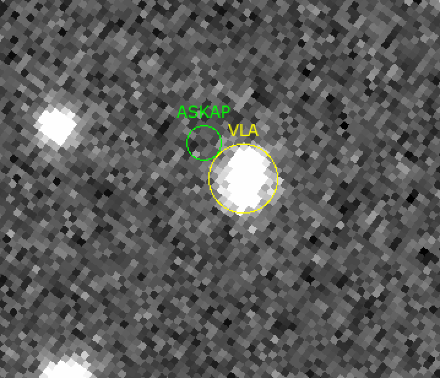

On 6 April 2021, the VLA/realfast system detected FRB 20201124A in collaboration with the CHIME/FRB team. The burst details are described in ATel 14526 (Law et al 2021). A summary view of the light curve, dynamic spectrum, and 10 ms radio image are below.

The localizations by ASKAP (ATel 14515) and the VLA are formally inconsistent. Below, we show how the two burst localizations are aligned on an SDSS i-band image of the proposed host galaxy (ATel 14516)
The realfast system continues to commensally search for fast transients during VLA continuum observations from 1-12 GHz.